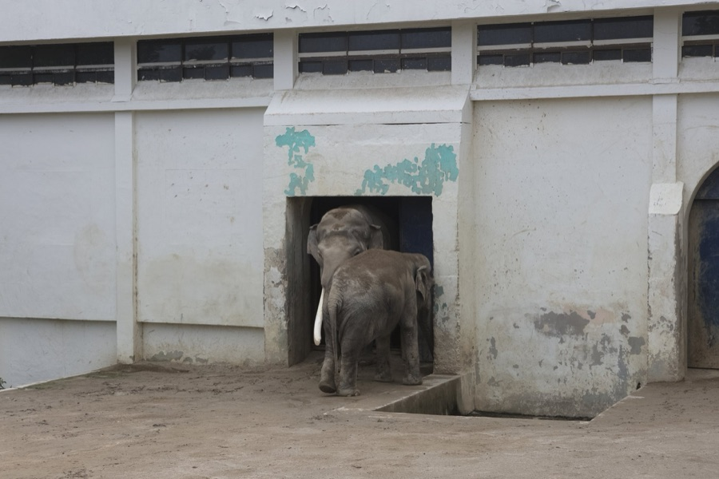
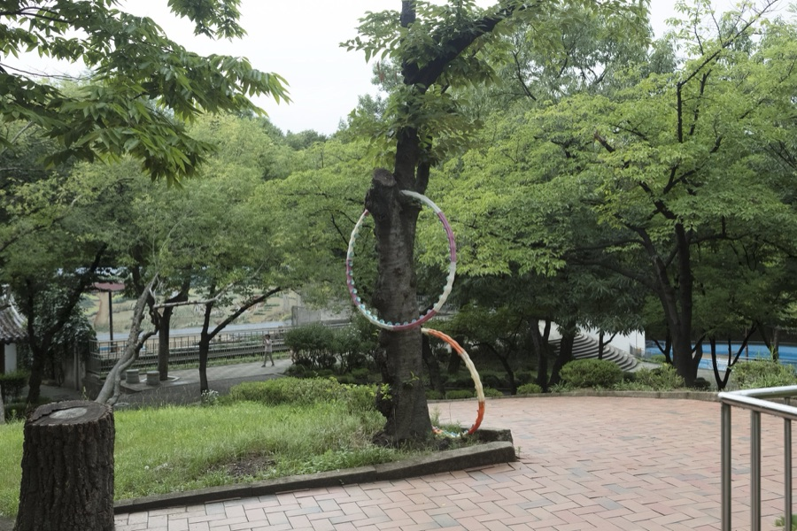
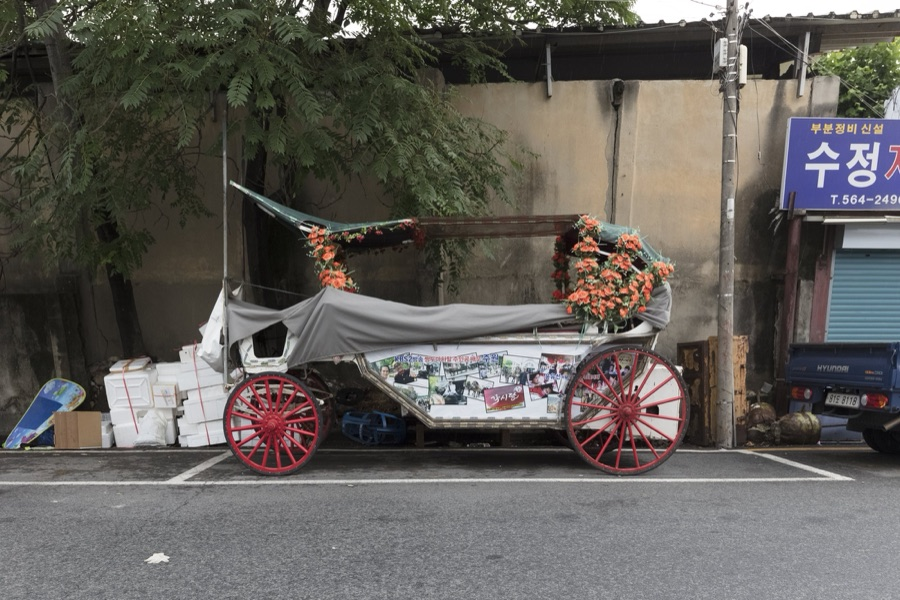

달성공원 프로젝트는 2017년부터 이어온 장소 기반 장기 기록 프로젝트입니다. 참여자의 사진과 기억, 동물원의 시간, 도시 재편의 흐름을 함께 살피며 하나의 장소에 쌓인 시간을 다시 읽습니다.
A place-based long-term record project that re-reads Dalseong Park through participants’ photographs and memories, the history of the zoo, and urban change.
달성공원은 오래된 성곽의 시간, 공원과 동물원의 시간, 시민의 산책과 유년의 기억, 그리고 동물원 이전과 도시 재편의 흐름이 한 장소 안에 겹쳐 있는 풍경입니다.
로컬익스프레스대구는 개인의 앨범 속 사진 한 장과 기억 한 줄을 통해, 행정 기록이나 공식 역사에 포착되기 어려운 장소의 감각을 천천히 모으고 다시 읽고자 합니다.
참여자가 전한 사진과 기억은 동의와 확인을 거쳐 정리되며, 공개는 로컬익스프레스대구의 아카이브 검토와 큐레이션을 통해 이루어집니다.
Participants’ photographs and memories are organized once consent is confirmed, and shared through Local Express Daegu’s archival review and curation.
달성공원 프로젝트 참여자의 사진과 기억을 통해 하나의 장소에 쌓인 시간을 다시 읽는 장기 기록 프로젝트 A long-term record project re-reading the layered times of one place through participants’ photographs and memories.


